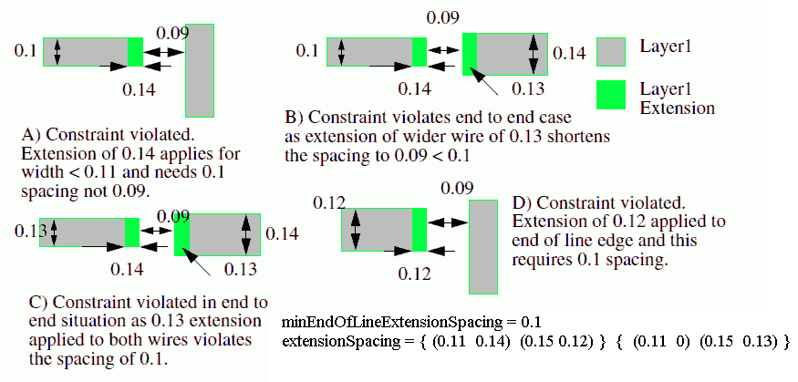
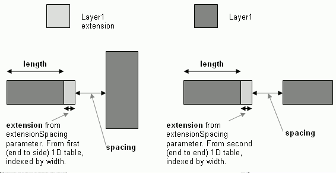

|
 |
 |
||||||
|
|
|
||||||
This constraint specifies the minimum spacing between the end of line edge and neighbouring wire edges for a given end of line width where the end of line should be extended by the specified extension.
If the length of the sides adjacent to the end of line edge is less than an optional minimum length, then the constraint does not apply. The minimum length requirement optionally depends on one or both of the sides adjacent to the end of line edge.
| Constraint type: | oaLayerConstraint |
| Value types: | oaIntValue |
| Database types: | oaDesign, oaTech |
| Object types: | oaAppObject |
The following value types are supported by this constraint:
This oaIntValue specifies the spacing value in database units
Units: DBU
The following parameters are supported by this constraint:
| Name | Value Type | Units | Default | Description |
|---|---|---|---|---|
| extensionSpacing oacExtensionSpacingConstraintParamType |
oaDualInt1DTblValue | DBU | (Required) |
Two 1D tables with the extension that is applied before checking the spacing, indexed by width. The first table applies to end-to-side cases, and the second table applies to end-to-end. |
| length oacLengthConstraintParamType |
oaIntValue | DBU | None |
The constraint does not apply if the end-of-line length is less than this value along both sides. |
| twoSides oacTwoSidesConstraintParamType |
oaBooleanValue | Boolean | False |
The constraint does not apply if the end-of-line length is less than the value of the length parameter along any one side. |


Copyright 2002 - 2010 Cadence Design Systems, Inc.
All rights reserved.